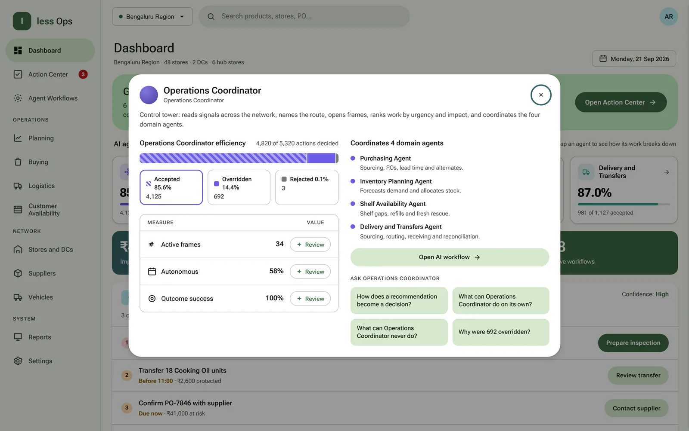
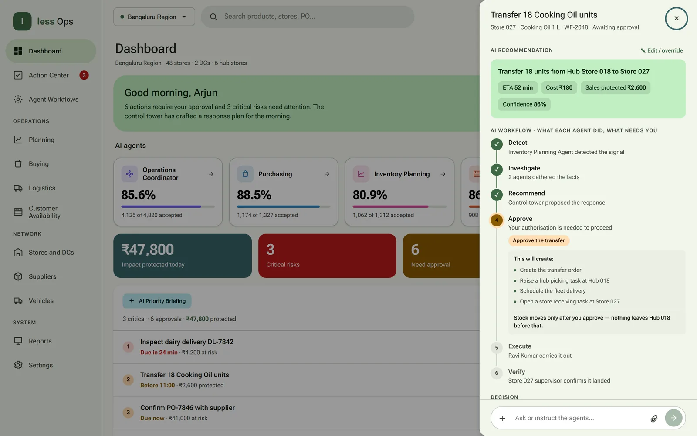

less Ops is a prototype I designed for a regional manager looking after 48 stores in Bengaluru. AI agents keep watch on stock, suppliers, shelves and deliveries, and flag problems early. The manager reviews what they suggest and decides what happens.
What the manager sees first thing in the morning: what needs a decision today, and what the agents have already prepared.
02 — The problem
Problems slip through because the information is split up.
Stock levels, supplier orders, shelf checks and deliveries all sit in different tools. A shortage might show up in one, the spare stock to fix it in another, and the truck that could move it in a third. Someone has to connect those dots by hand, and by the time they do, the shelf is often already empty.
less Ops brings all four into one place. When something looks off, it opens a case, pulls the related information together and suggests what to do. The manager’s job becomes checking that suggestion, not piecing the picture together.
03 — Who it is for
Built for the people who keep the shelves stocked.
Regional manager. Signs off on anything that costs money or moves stock.
Store and hub staff. Pick, dispatch and receive the goods.
Category and supply teams. Handle suppliers, purchase orders and lead times.
Everyone works from the same Action Center, where each task shows who owns it and how far along it is.
04 — AI agents
How the agents split the work.
One coordinator watches the whole region and hands work to four specialist agents. Each specialist has smaller sub-agents for specific jobs, and they all report back to the coordinator instead of acting on their own.
People make the final call. The agents can suggest a transfer, a purchase order or a delivery, but none of it happens until someone approves it.
Operations Coordinator
Coordinator
Keeps an eye on everything coming in, opens a case when something needs attention, works out what’s most urgent and passes it to the right specialist.
Purchasing
Inventory Planning
Shelf Availability
Delivery and Transfers
85.6%4,125 of 4,820 recommendations accepted
Inventory Planning
Forecasting and allocation
Predicts demand, spots stores that are about to run out, and decides how to share limited warehouse stock between them.
Demand Forecast
Store Stock Allocation
80.9%1,062 of 1,312 recommendations accepted
Purchasing
Suppliers
Handles the supplier side: raising purchase orders, tracking lead times and prices, and finding another supplier when one can’t deliver.
Purchase Order
Supplier Delivery Scheduling
88.5%1,174 of 1,327 recommendations accepted
Shelf Availability
Shelves and fresh food
Looks after what customers actually see: empty shelves, when to refill them, and fresh food that’s close to going off.
Shelf Refill
Fresh Food Rescue
86.1%908 of 1,054 recommendations accepted
Delivery and Transfers
Deliveries and transfers
Moves stock between hubs and stores, from choosing where to take it from and planning the route to checking that it arrived.
Hub-to-Store Supply
Stock Transfer
Transfer Order
Picking and Dispatch
Route and Vehicle
Delivery Tracking
Receiving Space
Delivery Receiving
87.0%981 of 1,127 recommendations accepted

The coordinator’s panel, showing the four specialists it hands work to.
05 — System flow
Every case follows the same six steps.
01
Detect
An agent notices something off in the data it’s watching.
Signal
02
Investigate
The agents dig in and confirm what’s actually going on.
Evidence
03
Recommend
The coordinator suggests a fix, with its cost and how confident it is.
Draft
04
Approve
The manager reviews it. Nothing is moved or ordered before this.
Human
05
Execute
The task goes to the person who will carry it out.
Action
06
Verify
Someone at the store confirms it’s done, and the case is closed.
Close
The full workflow map. Any suggestion can be traced back to the alert that started it.
06 — Worked example
Store 027 runs out of cooking oil.
Here’s one case from the prototype, step by step.
StepWhat happensWho
DetectStore 027 has 12 units of 1 L cooking oil left but expects to sell 28 by the end of the day.Inventory Planning
InvestigateThe agents check nearby stock and find that Hub Store 018 can spare enough without running short itself.Agents
RecommendThe coordinator suggests moving 18 units from Hub 018 to Store 027, and shows the cost and the sales it would save.Coordinator
ApproveThe manager approves it. Only then are the transfer order, picking task and delivery created.Regional manager
ExecuteA driver takes it over, and the delivery can be tracked on the way.Hub and driver
VerifyThe Store 027 supervisor confirms it arrived and the shelf is restocked. The case is closed.Store supervisor

The transfer screen: the suggestion, what each agent did, and the step waiting on the manager.
07 — My role
I designed it end to end.
I worked on the whole project: defining the problem, planning the product, deciding which agent does what and when a person steps in, designing the interface and its visual style, and building the clickable prototype.
Problem framingProduct planningAgent and workflow designUI designVisual systemInteractive prototype
08 — Try it
See it in action.
The prototype is fully clickable, including the cooking oil case above. Open it and follow a case from the first alert to the final check.